![\begin{lstlisting}[label=lst:pgbouncer2,caption=PgBouncer] [databases] template1... ... = pgbouncer.log pidfile = pgbouncer.pid admin_users = someuser \end{lstlisting}](postgresql-img48.png)
=0.1
2010
CREATIVE
COMMONS
ATTRIBUTION-NONCOMMERCIAL
2.5
При написании книги(мануала, или просто шпаргалки) использовались материалы:
ell
Данная книга не дает ответы на все вопросы по работе с PostgreSQL. Главное её задание -- показать возможности PostgreSQL, методики настройки и масштабируемости этой СУБД. В любом случае, выбор метода решения поставленной задачи остается за разработчиком или администратором СУБД.
Эти особенности позволяют сильно упростить написание приложений, но требуют для своей реализации дополнительных ресурсов.
Таким образом, прежде, чем искать ответ на вопрос «как заставить РСУБД работать быстрее в моей задаче?» следует ответить на вопрос «нет ли более подходящего средства для решения моей задачи, чем РСУБД?» Иногда использование другого средства потребует меньше усилий, чем настройка производительности.
Данная глава посвящена возможностям повышения производительности PostgreSQL. Глава не претендует на исчерпывающее изложение вопроса, наиболее полным и точным руководством по использованию PostgreSQL является, конечно, официальная документация и официальный FAQ. Также существует англоязычный список рассылки postgresql-performance, посвящённый именно этим вопросам. Глава состоит из двух разделов, первый из которых ориентирован скорее на администратора, второй -- на разработчика приложений. Рекомендуется прочесть оба раздела: отнесение многих вопросов к какому-то одному из них весьма условно.
Если процессу нужен доступ к таблице, то он сначала ищет нужные блоки в общем буфере. Если блоки присутствуют, то он может продолжать работу, если нет -- делается системный вызов для их загрузки. Загружаться блоки могут как из файлового кэша ОС, так и с диска, и эта операция может оказаться весьма «дорогой».
Если объём буфера недостаточен для хранения часто используемых рабочих данных, то они будут постоянно писаться и читаться из кэша ОС или с диска, что крайне отрицательно скажется на производительности.
В то же время не следует устанавливать это значение слишком большим: это НЕ вся память, которая нужна для работы PostgreSQL, это только размер разделяемой между процессами PostgreSQL памяти, которая нужна для выполнения активных операций. Она должна занимать меньшую часть оперативной памяти вашего компьютера, так как PostgreSQL полагается на то, что операционная система кэширует файлы, и не старается дублировать эту работу. Кроме того, чем больше памяти будет отдано под буфер, тем меньше останется операционной системе и другим приложениям, что может привести к своппингу.
К сожалению, чтобы знать точное число shared_buffers, нужно учесть количество оперативной памяти компьютера, размер базы данных, число соединений и сложность запросов, так что лучше воспользуемся несколькими простыми правилами настройки.
На выделенных серверах полезным объемом будет значение от 8 МБ до 2 ГБ. Объем может быть выше, если у вас большие активные порции базы данных, сложные запросы, большое число одновременных соединений, длительные транзакции, вам доступен большой объем оперативной памяти или большее количество процессоров. И, конечно же, не забываем об остальных приложениях. Выделив слишком много памяти для базы данных, мы можем получить ухудшение производительности. В качестве начальных значений можете попробовать следующие:
Для тонкой настройки параметра установите для него большое
значение и потестируйте базу при обычной нагрузке. Проверяйте
использование разделяемой памяти при помощи ipcs или других
утилит(например, free или vmstat). Рекомендуемое значение
параметра будет примерно в 1,2 -2 раза больше, чем максимум
использованной памяти. Обратите внимание, что память под буфер
выделятся при запуске сервера, и её объём при работе не
изменяется. Учтите также, что настройки ядра операционной системы
могут не дать вам выделить большой объём памяти. В руководстве
администратора PostgreSQL описано, как можно изменить эти
настройки:
http://developer.postgresql.org/docs/postgres/kernel-resources.html
Вот несколько примеров, полученных на личном опыте и при тестировании:
Если объём памяти недостаточен для сортироки некоторого результата, то серверный процесс будет использовать временные файлы. Если же объём памяти слишком велик, то это может привести к своппингу.
Объём памяти задаётся параметром work_mem в файле postgresql.conf. Единица измерения параметра -- 1 кБ. Значение по умолчанию -- 1024. В качестве начального значения для параметра можете взять 2-4% доступной памяти. Для веб-приложений обычно устанавливают низкие значения work_mem, так как запросов обычно много, но они простые, обычно хватает от 512 до 2048 КБ. С другой стороны, приложения для поддержки принятия решений с сотнями строк в каждом запросе и десятками миллионов столбцов в таблицах фактов часто требуют work_mem порядка 500 МБ. Для баз данных, которые используются и так, и так, этот параметр можно устанавливать для каждого запроса индивидуально, используя настройки сессии. Например, при памяти 1-4 ГБ рекомендуется устанавливать 32-128 MB.
До версии 7.2 команда VACUUM полностью блокировала таблицу. Начиная с версии 7.2, команда VACUUM накладывает более слабую блокировку, позволяющую параллельно выполнять команды SELECT, INSERT, UPDATE и DELETE над обрабатываемой таблицей. Старый вариант команды называется теперь VACUUM FULL.
Новый вариант команды не пытается удалить все старые версии записей и, соответственно, уменьшить размер файла, содержащего таблицу, а лишь помечает занимаемое ими место как свободное. Для информации о свободном месте есть следующие настройки:
Максимальное количество таблиц, для которых будет отслеживаться свободное место в общей карте свободного пространства. Эти данные собираются VACUUM. Параметр max_fsm_relations должен быть не меньше общего количества таблиц во всех базах данной установки (лучше с запасом).
Данный параметр определяет размер реестра, в котором хранится информация о частично освобождённых страницах данных, готовых к заполнению новыми данными. Значение этого параметра нужно установить чуть больше, чем полное число страниц, которые могут быть затронуты операциями обновления или удаления между выполнением VACUUM. Чтобы определить это число, можно запустить VACUUM VERBOSE ANALYZE и выяснить общее число страниц, используемых базой данных. max_fsm_pages обычно требует немного памяти, так что на этом параметре лучше не экономить.
Если эти параметры установленны верно и информация обо всех изменениях помещается в FSM, то команды VACUUM будет достаточно для сборки мусора, если нет - понадобится VACUUM FULL, во время работы которой нормальное использование БД сильно затруднено.
ВНИМАНИЕ! Начиная с 8.4 версии fsm параметры были убраны, поскольку Free Space Map сохраняется на жесткий диск, а не в память.
Буфер под временные объекты, в основном для временных таблиц. Можно установить порядка 16 МБ.
Количество одновременно подготавливаемых транзакций (PREPARE TRANSACTION). Можно оставить по дефолту -- 5.
Если у вас большие таблицы, и производится много одновременных операций записи, вам может пригодиться функция, которая уменьшает затраты на I/O для VACUUM, растягиваяя его по времени. Чтобы включить эту функциональность, нужно поднять значение vacuum_cost_delay выше 0. Используйте разумную задержку от 50 до 200 мс. Для более тонкой настройки повышайте vacuum_cost_page_hit и понижайте vacuum_cost_page_limit. Это ослабит влияние VACUUM, увеличив время его выполнения. В тестах с параллельными транзакциями Ян Вик (Jan Wieck) получил, что при значениях delay -- 200, page_hit -- 6 и предел -- 100 вляние VACUUM уменьшилось более чем на 80%, но его длительность увеличилась втрое.
Специальный стек для сервера, в идеале он должен совпадать с размером стека, выставленном в ядре ОС. Установка большего значения, чем в ядре, может привести к ошибкам. Рекомендуется устанавливать 2-4 MB.
Максимальное количество файлов, открываемых процессом и его подпроцессами в один момент времени. Уменьшите данный параметр, если в процессе работы наблюдается сообщение «Too many open files».
В этом случае нет необходимости сбрасывать на диск изменения данных при каждом успешном завершении транзакции: в случае сбоя БД может быть восстановлена по записям в журнале. Таким образом, данные из буферов сбрасываются на диск при проходе контрольной точки: либо при заполнении нескольких (параметр checkpoint_segments, по умолчанию 3) сегментов журнала транзакций, либо через определённый интервал времени (параметр checkpoint_timeout, измеряется в секундах, по умолчанию 300).
Изменение этих параметров прямо не повлияет на скорость чтения, но может принести большую пользу, если данные в базе активно изменяются.
Для увеличения интервала между контрольными точками нужно увеличить количество сегментов журнала транзакций (checkpoint_segments). Данный параметр определяет количество сегментов (каждый по 16 МБ) лога транзакций между контрольными точками. Этот параметр не имеет особого значения для базы данных, предназначенной преимущественно для чтения, но для баз данных со множеством транзакций увеличение этого параметра может оказаться жизненно необходимым. В зависимости от объема данных установите этот параметр в диапазоне от 12 до 256 сегментов и, если в логе появляются предупреждения (warning) о том, что контрольные точки происходят слишком часто, постепенно увеличивайте его. Место, требуемое на диске, вычисляется по формуле (checkpoint_segments * 2 + 1) * 16 МБ, так что убедитесь, что у вас достаточно свободного места. Например, если вы выставите значение 32, вам потребуется больше 1 ГБ дискового пространства.
Следует также отметить, что чем больше интервал между контрольными точками, тем дольше будут восстанавливаться данные по журналу транзакций после сбоя.
Использовать этот параметр рекомендуется лишь в том случае, если вы всецело доверяете своему «железу» и своему источнику бесперебойного питания. Ну или если данные в базе не представляют для вас особой ценности.
определяют задержку между попаданием записи в буфер журнала транзакций и сбросом её на диск. Если при успешном завершении транзакции активно не менее commit_siblings транзакций, то запись будет задержана на время commit_delay. Если за это время завершится другая транзакция, то их изменения будут сброшены на диск вместе, при помощи одного системного вызова. Эти параметры позволят ускорить работу, если параллельно выполняется много «мелких» транзакций.
Метод, который используется для принудительной записи данных на диск. Если fsync=off, то этот параметр не используется. Возможные значения:
Не все эти методы доступны на разных ОС. По умолчанию устанавливается первый, который доступен для системы.
Установите данный параметр в off, если fsync=off. Иначе, когда этот параметр on, PostgreSQL записывает содержимое каждой записи в журнал транзакций при первой модификации таблицы. Это необходимо, поскольку данные могут записаться лишь частично, если в ходе процесса «упала» ОС. Это приведет к тому, что на диске окажутся новые данные смешанные со старыми. Строкового уровня записи в журнал транзакций может быть не достаточно, что бы полность восстановить данные после «падения». full_page_writes гарантирует корректное восстановление, ценой увелечения записываемых данных в журнал транзакций (Единственный способ снижения объема записи в журнал транзакций заключается в увеличении checkpoint_interval).
Количество памяти используемое в SHARED MEMORY для ведения транзакционных логов3. Стоит увеличить буфер до 256-512 кБ, что позволит лучше работать с большими транзакциями. Например, при доступной памяти 1-4 ГБ рекомендуется устанавливать 256-1024 КБ.
Этот параметр задаёт объём статистики, собираемой командой ANALYZE (см. пункт 3.1.2). Увеличение параметра заставит эту команду работать дольше, но может позволить оптимизатору строить более быстрые планы, используя полученные дополнительные данные. Объём статистики для конкретного поля может быть задан командой ALTER TABLE ...SET STATISTICS.
Этот параметр сообщает PostgreSQL примерный объём файлового кэша операционной системы, оптимизатор использует эту оценку для построения плана запроса4.
Пусть в вашем компьютере 1,5 ГБ памяти, параметр shared_buffers установлен в 32 МБ, а параметр effective_cache_size в 800 МБ. Если запросу нужно 700 МБ данных, то PostgreSQL оценит, что все нужные данные уже есть в памяти и выберет более агрессивный план с использованием индексов и merge joins. Но если effective_cache_size будет всего 200 МБ, то оптимизатор вполне может выбрать более эффективный для дисковой системы план, включающий полный просмотр таблицы.
На выделенном сервере имеет смысл выставлять effective_cache_size в 2/3 от всей оперативной памяти; на сервере с другими приложениями сначала нужно вычесть из всего объема RAM размер дискового кэша ОС и память, занятую остальными процессами.
Переменная, указывающая на условную стоимость индексного доступа к страницам данных. На серверах с быстрыми дисковыми массивами имеет смысл уменьшать изначальную настройку до 3.0, 2.5 или даже до 2.0. Если же активная часть вашей базы данных намного больше размеров оперативной памяти, попробуйте поднять значение параметра. Можно подойти к выбору оптимального значения и со стороны производительности запросов. Если планировщик запросов чаще, чем необходимо, предпочитает последовательные просмотры (sequential scans) просмотрам с использованием индекса (index scans), понижайте значение. И наоборот, если планировщик выбирает просмотр по медленному индексу, когда не должен этого делать, настройку имеет смысл увеличить. После изменения тщательно тестируйте результаты на максимально широком наборе запросов. Никогда не опускайте значение random_page_cost ниже 2.0; если вам кажется, что random_page_cost нужно еще понижать, разумнее в этом случае менять настройки статистики планировщика.
Данные, полученные сборщиком статистики, доступны через специальные системные представления. При установках по умолчанию собирается очень мало информации, рекомендуется включить все возможности: дополнительная нагрузка будет невелика, в то время как полученные данные позволят оптимизировать использование индексов (а также помогут оптимальной работе autovacuum демону).
Единого мнения насчёт наиболее подходящей для PostgreSQL файловой системы нет, поэтому рекомендуется использовать ту, которая лучше всего поддерживается вашей операционной системой. При этом учтите, что современные журналирующие файловые системы не намного медленнее нежурналирующих, а выигрыш -- быстрое восстановление после сбоев -- от их использования велик.
Вы легко можете получить выигрыш в производительности без побочных эффектов, если примонтируете файловую систему, содержащую базу данных, с параметром noatime5.
Если в вашем сервере есть несколько физических дисков6, то вы можете разнести файлы базы данных и журнал транзакций по разным дискам. Данные в сегменты журнала пишутся последовательно, более того, записи в журнале транзакций сразу сбрасываются на диск, поэтому в случае нахождения его на отдельном диске магнитная головка не будет лишний раз двигаться, что позволит ускорить запись.
Порядок действий:
Примерно таким же образом можно перенести и часть файлов, содержащих таблицы и индексы, на другой диск, но здесь потребуется больше кропотливой ручной работы, а при внесении изменений в схему базы процедуру, возможно, придётся повторить.
Возможно для конкретного случаю лучше подойдут другие настройки. Внимательно изучите данное руководство и настройте PostgreSQL операясь на эту информацию.
RAM -- размер памяти;
Для оптимизации настроек для PostgreSQL Gregory Smith создал
утилиту pgtune7 в
расчете на обеспечение максимальной производительности для
заданной аппаратной конфигурации. Утилита проста в использовании
и в многих Linux системах может идти в составе пакетов. Если же
нет, можно просто скачать архив и распаковать. Для начала:
опцией [frame=tblr]-i, -input-config указываем текущий файл
postgresql.conf, а [frame=tblr]-o, -output-config указываем имя
файла для нового postgresql.conf.
Есть также дополнительные опции для настройки конфига.
Хочется сразу добавить, что pgtune не панацея для оптимизации настройки PostgreSQL. Многие настройки зависят не только от аппаратной конфигурации, но и от размера базы данных, числа соединений и сложность запросов, так что оптимально настроить базу данных возможно учитывая все эти параметры.
Обычно команда используется в связке VACUUM ANALYZE. Если в базе есть таблицы, данные в которых не изменяются и не удаляются, а лишь добавляются, то для таких таблиц можно использовать отдельную команду ANALYZE. Также стоит использовать эту команду для отдельной таблицы после добавления в неё большого количества записей.
Второй случай требует пояснений. Индекс, как и таблица, содержит блоки со старыми версиями записей. PostgreSQL не всегда может заново использовать эти блоки, и поэтому файл с индексом постепенно увеличивается в размерах. Если данные в таблице часто меняются, то расти он может весьма быстро.
Если вы заметили подобное поведение какого-то индекса, то стоит настроить для него периодическое выполнение команды REINDEX. Учтите: команда REINDEX, как и VACUUM FULL, полностью блокирует таблицу, поэтому выполнять её надо тогда, когда загрузка сервера минимальна.
Чтение вывода этих команд -- искусство, которое приходит с опытом. Для начала обращайте внимание на следующее:
Следует отметить, что полный просмотр таблицы далеко не всегда медленнее просмотра по индексу. Если, например, в таблице-справочнике несколько сотен записей, умещающихся в одном-двух блоках на диске, то использование индекса приведёт лишь к тому, что придётся читать ещё и пару лишних блоков индекса. Если в запросе придётся выбрать 80% записей из большой таблицы, то полный просмотр опять же получится быстрее.
При тестировании запросов с использованием EXPLAIN ANALYZE можно воспользоваться настройками, запрещающими оптимизатору использовать определённые планы выполнения. Например,
SET enable_seqscan=false;
запретит использование полного просмотра таблицы, и вы сможете выяснить, прав ли был оптимизатор, отказываясь от использования индекса. Ни в коем случае не следует прописывать подобные команды в postgresql.conf! Это может ускорить выполнение нескольких запросов, но сильно замедлит все остальные!
Из этих представлений можно узнать, в частности
Также возможен «дедуктивный» подход, при котором сначала создаётся большое количество индексов, а затем неиспользуемые индексы удаляются.
CREATE INDEX foo_name_first_idx ON foo ((lower(substr(foo_name, 1, 1))));и запрос вида
SELECT * FROM foo WHERE lower(substr(foo_name, 1, 1)) = 'ы';будет его использовать.
Частичные индексы (partial indexes) Под частичным индексом понимается индекс с предикатом WHERE. Пусть, например, у вас есть в базе таблица scheta с параметром uplocheno типа boolean. Записей, где uplocheno = false меньше, чем записей с uplocheno = true, а запросы по ним выполняются значительно чаще. Вы можете создать индекс
CREATE INDEX scheta_neuplocheno ON scheta (id) WHERE NOT uplocheno;который будет использоваться запросом вида
SELECT * FROM scheta WHERE NOT uplocheno AND ...;Достоинство подхода в том, что записи, не удовлетворяющие условию WHERE, просто не попадут в индекс.
Реализация части логики на стороне сервера через хранимые процедуры, триггеры, правила9 часто позволяет ускорить работу приложения. Действительно, если несколько запросов объединены в процедуру, то не требуется
Кроме того, хранимые процедуры упрощают процесс разработки и поддержки: изменения надо вносить только на стороне сервера, а не менять запросы во всех приложениях.
Проблема Запрос вида
осуществляет полный просмотр таблицы foo, что весьма долго для
таблиц с большим количеством записей.
Решение Простого решения проблемы, к сожалению, нет. Возможны следу- ющие подходы:
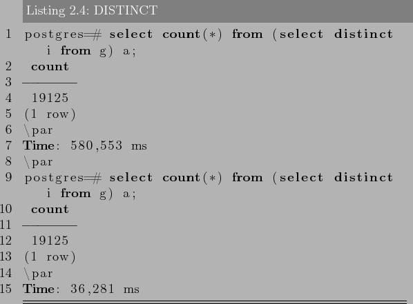
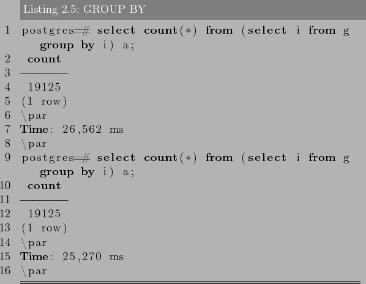
Для работы с pgFouine сначала нужно сконфигурировать PostgreSQL для создания нужного формата log-файлов:
Для записи каждого обработанного запроса установите log_min_duration_statement на 0. Чтобы отключить запись запросов, установите этот параметр на -1.
pgFouine -- простой в использовании инструмент командной
строки. Следующая команда создаёт HTML-отчёт со стандартными
параметрами:
С помощью этой строки можно отобразить текстовый отчёт с 10
запросами на каждый экран на стандартном выводе:
Более подробно о возможностях, а также много полезных примеров, можно найти на официальном сайта проекта -- http://pgfouine.projects.postgresql.org.
Скорее всего у Вас есть несколько огромных таблиц (обычно всю нагрузку обеспечивают всего несколько таблиц СУБД из всех имеющихся). Причем чтение в большинстве случаев приходится только на самую последнюю их часть (т.е. активно читаются те данные, которые недавно появились). Примером тому может служить блог -- на первую страницу (это последние 5...10 постов) приходится 40...50% всей нагрузки, или новостной портал (суть одна и та же), или системы личных сообщений… впрочем понятно. Партиционирование таблицы позволяет базе данных делать интеллектуальную выборку -- сначала СУБД уточнит, какой партиции соответствует Ваш запрос (если это реально) и только потом сделает этот запрос, применительно к нужной партиции (или нескольким партициям). Таким образом, в рассмотренном случае, Вы распределите нагрузку на таблицу по ее партициям. Следовательно выборка типа «SELECT * FROM articles ORDER BY id DESC LIMIT 10» будет выполняться только над последней партицией, которая значительно меньше всей таблицы.
Итак, партиционирование дает ряд преимуществ:
Чтобы настроить партиционирование таблици, достаточно выполните следующие действия:
Поскольку нам нужны отчеты каждый месяц, мы будем делить партиции по месяцам. Это поможет нам быстрее создавать отчеты и чистить старые данные.
«Мастер» таблица будет «my_logs», структуру которой мы указали
выше. Далее создадим «дочерние» таблици (партиции):
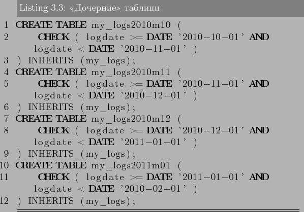
Данными командами мы создаем таблицы «my_logs2010m10»,
«my_logs2010m11» и т.д., которые копируют структуру с «мастер»
таблици (кроме индексов). Также с помощью «CHECK» мы задаем
диапазон значений, который будет попадать в эту партицию (хочу
опять напомнить, что диапазоны значений партиций не должны
пересекатся!). Поскольку партиционирование будет работать по полю
«logdate», мы создадим индекс на это поле на всех
партициях:
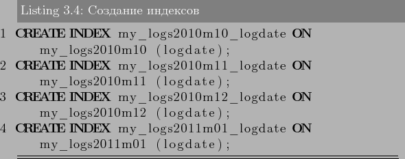
Далее для удобства создадим функцию, которая будет
перенаправлять новые данные с «мастер» таблици в соответствующую
партицию.
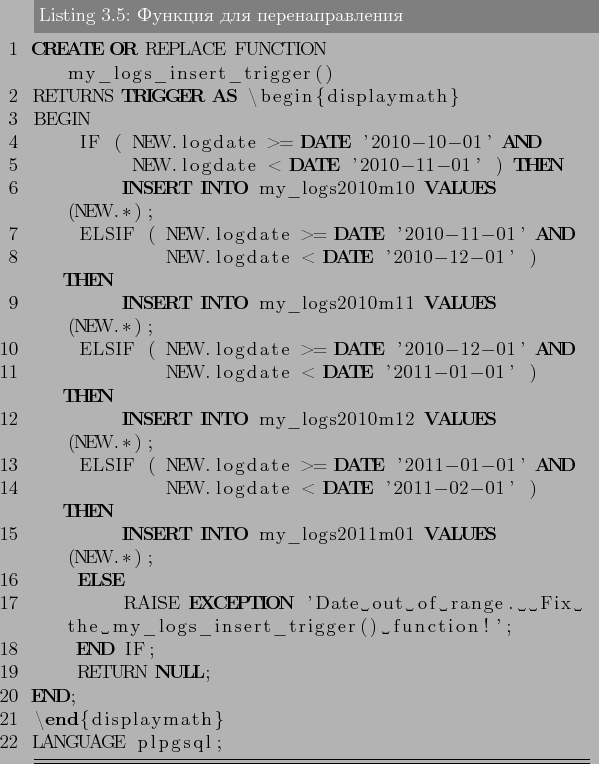
В функции ничего особенного нет: идет проверка поля «logdate»,
по которой направляются данные в нужную партицию. При не
нахождении требуемой партиции -- вызываем ошибку. Теперь осталось
создать триггер на «мастер» таблицу для автоматического вызова
данной функции:
Партиционирование настроено и теперь мы готовы приступить к тестированию.
Теперь проверим где они хранятся:
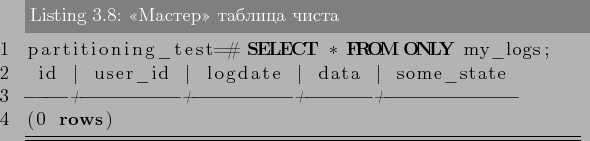
Как видим в «мастер» таблицу данные не попали -- она чиста.
Теперь проверим а есть ли вообще данные:
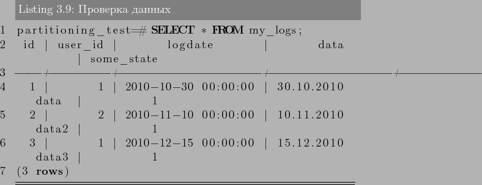
Данные при этом выводятся без проблем. Проверим партиции,
правильно ли хранятся данные:
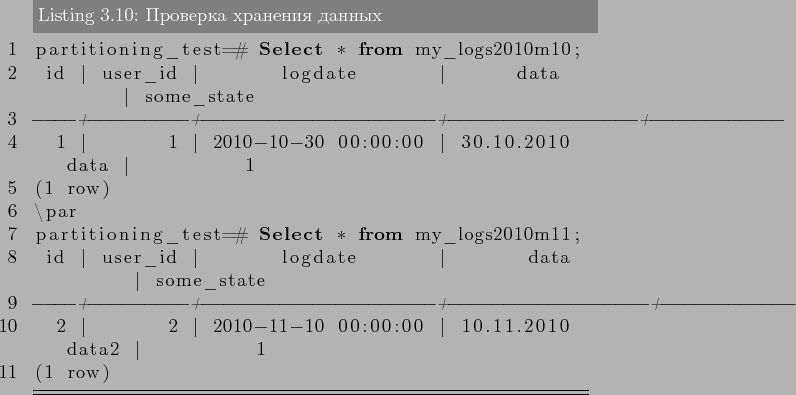
Отлично! Данные хранятся на требуемых нам партициях. При этом
запросы к таблице «my_logs» менять не нужно:
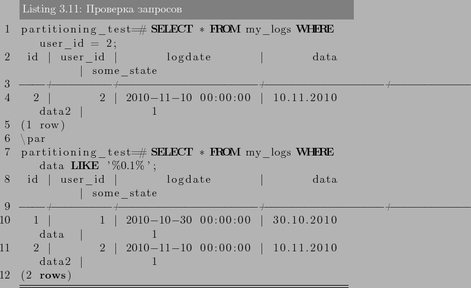
Как видно через команду «EXPLAIN», данный запрос сканирует все
партиции на наличие данных в них, что не логично, поскольку
данное условие «logdate > 2010-12-01» говорит о том, что
данные должны братся только с партицый, где подходит такое
условие. А теперь включим «constraint_exclusion»:
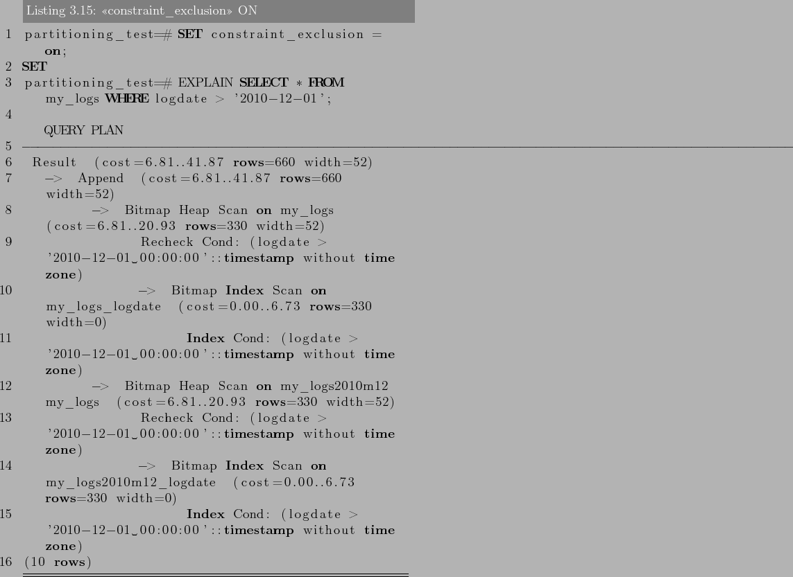
Как мы видим, теперь запрос работает правильно, и сканирует только партиции, что подходят под условие запроса. Но включать «constraint_exclusion» не желательно для баз, где нет партиционирования, поскольку команда «CHECK» будет проверятся на всех запросах, даже простых, а значит производительность сильно упадет. Начиная с 8.4 версии PostgreSQL «constraint_exclusion» может быть «on», «off» и «partition». По умолчанию (и рекомендуется) ставить «constraint_exclusion» не «on», и не «off», а «partition», который будет проверять «CHECK» только на партиционированых таблицах.
В случае синхронной репликации, если данная реплика обновляется, все другие реплики того же фрагмента данных также должны быть обновлены в одной и той же транзакции. Логически это означает, что существует лишь одна версия данных. В большинстве продуктов синхронная репликация реализуется с помощью триггерных процедур (возможно, скрытых и управляемых системой). Но синхронная репликация имеет тот недостаток, что она создаёт дополнительную нагрузку при выполнении всех транзакций, в которых обновляются какие-либо реплики (кроме того, могут возникать проблемы, связанные с доступностью данных).
В случае асинхронной репликации обновление одной реплики распространяется на другие спустя некоторое время, а не в той же транзакции. Таким образом, при асинхронной репликации вводится задержка, или время ожидания, в течение которого отдельные реплики могут быть фактически неидентичными (то есть определение реплика оказывается не совсем подходящим, поскольку мы не имеем дело с точными и своевременно созданными копиями). В большинстве продуктов асинхронная репликация реализуется посредством чтения журнала транзакций или постоянной очереди тех обновлений, которые подлежат распространению. Преимущество асинхронной репликации состоит в том, что дополнительные издержки репликации не связаны с транзакциями обновлений, которые могут иметь важное значение для функционирования всего предприятия и предъявлять высокие требования к производительности. К недостаткам этой схемы относится то, что данные могут оказаться несовместимыми (то есть несовместимыми с точки зрения пользователя). Иными словами, избыточность может проявляться на логическом уровне, а это, строго говоря, означает, что термин контролируемая избыточность в таком случае не применим.
Рассмотрим кратко проблему согласованности (или, скорее, несогласованности). Дело в том, что реплики могут становиться несовместимыми в результате ситуаций, которые трудно (или даже невозможно) избежать и последствия которых трудно исправить. В частности, конфликты могут возникать по поводу того, в каком порядке должны применяться обновления. Например, предположим, что в результате выполнения транзакции А происходит вставка строки в реплику X, после чего транзакция B удаляет эту строку, а также допустим, что Y -- реплика X. Если обновления распространяются на Y, но вводятся в реплику Y в обратном порядке (например, из-за разных задержек при передаче), то транзакция B не находит в Y строку, подлежащую удалению, и не выполняет своё действие, после чего транзакция А вставляет эту строку. Суммарный эффект состоит в том, что реплика Y содержит указанную строку, а реплика X -- нет.
В целом задачи устранения конфликтных ситуаций и обеспечения согласованности реплик являются весьма сложными. Следует отметить, что, по крайней мере, в сообществе пользователей коммерческих баз данных термин репликация стал означать преимущественно (или даже исключительно) асинхронную репликацию.
Основное различие между репликацией и управлением копированием заключается в следующем: Если используется репликация, то обновление одной реплики в конечном счёте распространяется на все остальные автоматически. В режиме управления копированием, напротив, не существует такого автоматического распространения обновлений. Копии данных создаются и управляются с помощью пакетного или фонового процесса, который отделён во времени от транзакций обновления. Управление копированием в общем более эффективно по сравнению с репликацией, поскольку за один раз могут копироваться большие объёмы данных. К недостаткам можно отнести то, что большую часть времени копии данных не идентичны базовым данным, поэтому пользователи должны учитывать, когда именно были синхронизированы эти данные. Обычно управление копированием упрощается благодаря тому требованию, чтобы обновления применялись в соответствии со схемой первичной копии того или иного вида.
Для репликации PostgreSQL существует несколько решений, как закрытых, так и свободных. Закрытые системы репликации не будут рассматриваться в этой книге (ну, сами понимаете). Вот список свободных решений:
Это, конечно, не весь список свободных систем для репликации, но я думаю даже из этого есть что выбрать для PostgreSQL.
Для других систем можно поставить из исходников21:
Теперь ставим сам Bucardo. Скачиваем22 его и инсталируем:
Для работы Bucardo потребуется установить поддержку pl/perlu
языка PostgreSQL.
Можем приступать к настройке.
Bucardo покажет настройки подключения к PostgreSQL, которые
можно будет изменить:
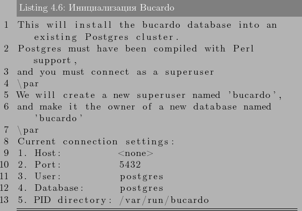
Когда вы измените требуемые настройки и подтвердите установку, Bucardo создаст пользователя bucardo и базу данных bucardo. Данный пользователь должен иметь право логинится через Unix socket, поэтому лучше заранее дать ему такие права в pg_hda.conf.
Первой командой мы указали базу данных и дали ей имя master (для того, что в реальной жизни master_db и slave_db имеют одинаковое название и их нужно Bucardo отличать). Второй и третей командой мы указали реплицыровать все таблицы и последовательности, обьеденив их в групу all_tables.
Дальше добавляем slave_db:
Мы назвали replica базу данных в Bucardo.
Данной командой мы установим Bucardo тригеры в PostgreSQL. А теперь по параметрам:
Это тип синхронизации. Существует 3 типа:
Источник синхронизации.
БД, в которум производим репликацию.
Для master-master:
Остановка репликации:
Например:
Более полный список команд -- http://bucardo.org/wiki/Bucardo_ctl
В главе было рассмотрено несколько видов репликации PostgreSQL. Нельзя четко сказать какая лучше всех. Потоковая репликация -- одна из самых лучших вариантов для поддержки идентичных кластеров баз данных, но доступна только с 9.0 версии PostgreSQL. Slony-I -- громоздкая и сложная в настройке система, но имеющая в своем арсенале множество функций, таких как поддержка каскадной репликации, отказоустойчивости (failover) и переключение между серверами (switchover). В тоже время Londiste не обладает подобным функционалом, но компактный и прост в установке. Bucardo -- система которая может быть или master-master, или master-slave репликацией, но не может обработать огромные обьекты, нет отказоустойчивости(failover) и переключение между серверами (switchover). RubyRep, как для master-master репликации, очень просто в установке и настройке, но за это ему приходится расплачиватся скоростью работы -- самый медленный из всех (синхронизация больших обьемов данных между таблицами).

Рассмотрим пример. Пусть у нас есть приложение с регистрацией пользователей, которое позволяет писать друг другу личные сообщения. Допустим оно очень популярно и много людей им пользуются ежедневно. Естественно, что таблица с личными сообщениями будет намного больше всех остальных таблиц в базе (скажем, будет занимать 90% всех ресурсов). Зная это, мы можем подготовить для этой (только одной!) таблицы выделенный сервер помощнее, а остальные оставить на другом (послабее). Теперь мы можем идеально подстроить сервер для работы с одной специфической таблицей, постараться уместить ее в память, возможно, дополнительно партиционировать ее и т.д. Такое распределение называется вертикальным шардингом.
Что делать, если наша таблица с сообщениями стала настолько большой, что даже выделенный сервер под нее одну уже не спасает. Необходимо делать горизонтальный шардинг -- т.е. разделение одной таблицы по разным ресурсам. Как это выглядит на практике? Все просто. На разных серверах у нас будет таблица с одинаковой структурой, но разными данными. Для нашего случая с сообщениями, мы можем хранить первые 10 миллионов сообщений на одном сервере, вторые 10 - на втором и т.д. Т.е. необходимо иметь критерий шардинга -- какой-то параметр, который позволит определять, на каком именно сервере лежат те или иные данные.
Обычно, в качестве параметра шардинга выбирают ID пользователя (user_id) -- это позволяет делить данные по серверам равномерно и просто. Т.о. при получении личных сообщений пользователей алгоритм работы будет такой:
Задачу определения конкретного сервера можно решать двумя путями:
Для шардинга не существует решения на уровне известных платформ, т.к. это весьма специфическая для отдельно взятого приложения задача.
Естественно, делая горизонтальный шардинг, Вы ограничиваете себя в возможности выборок, которые требуют пересмотра всей таблицы (например, последние посты в блогах людей будет достать невозможно, если таблица постов шардится). Такие задачи придется решать другими подходами. Например, для описанного примера, можно при появлении нового поста, заносить его ID в общий стек, размером в 100 элементом.
Горизонтальный шардинг имеет одно явное преимущество -- он бесконечно масштабируем. Для создания шардинга PostgreSQL существует несколько решений:
Программы, которые создают пулы соединений:
Также некоторые администраторы PostgreSQL с успехом используют Memcached для уменьшения работы БД за счет кэширования данных.
К достоинствам PgBouncer относится:
Базовая утилита запускается так:
Простой пример для конфига:
Нужно создать файл пользователей userlist.txt примерного содержания:''someuser'' ''same_password_as_in_server''
Админский доступ из консоли к базе данных pgbouncer:
Здесь можно получить различную статистическую информацию с помощью команды SHOW.
Все очень просто. PgBouncer намного лучше работает с пулами соединений, чем PgPool-II. Если вам не нужны остальные фичи, которыми владеет PgPool-II (ведь пулы коннектов это мелочи к его функционалу), то конечно лучше использовать PgBouncer.
Хотя некоторые используют PgBouncer и PgPool-II совместно.
Тоже самое касается и PostgreSQL баз данных. Бекапы должны быть! Посыпавшийся винчестер на сервере, ошибка в фаловой системе, ошибка в другой программе, которая перетерла весь каталог PostgreSQL и многое другое приведет только к плачевному результату. И даже если у Вас репликация с множеством слейвов, это не означает, что система в безопасности -- неверный запрос на мастер (DELETE, DROP), и у слейвов такая же порция данных (точнее их отсутствие).
Существуют три принципиально различных подхода к резервному копированию данных PostgreSQL:
Для восстановления такого бэкапа достаточно выполнить:
При этом базу данных «dbname» потребуется создать перед
восстановлением. Также потребуется создать пользователей, которые
имеют доступ к данным, которые восстанавливаются (это можно и не
делать, но тогда просто в выводе восстановления будут ошибки).
Если нам требуется, чтобы восстановление прекратилось при
возникновении ошибки, тогда потребуется восстанавливать бэкап
таким способом:
Также, можно делать бэкап и сразу восстанавливать его на
другую базу:
После восстановления бэкапа желательно запустить «ANALYZE», чтобы оптимизатор запросов обновил статистику.
А что, если нужно сделать бэкап не одной базы данных, а всех,
да и еще получить в бэкапе информацию про роли и таблицы? В таком
случае у PostgreSQL есть утилита pg_dumpall. pg_dumpall
используется для создания бэкапа данных всего кластера
PostgreSQL:
Для восстановления такого бэкапа достаточно выполнить от
суперпользователя:
Можно использовать программу сжатия данных, например
GZIP:
Восстановление:
или
Команда split позволяет разделить вывод в файлы меньшего
размера, которые являются подходящими по размеру для файловой
системы. Например, бэкап делится на куски по 1
мегабайту:
Восстановление:
PostgreSQL построен на системе с библиотекой сжатия Zlib,
поэтому пользовательский формат бэкапа будет в сжатом виде.
Это похоже на метод с импользованием GZIP, но он имеет
дополнительное преимущество -- таблицы могут быть
восстановлены выборочно:
Через psql такой бэкап не восстановить, но для этого есть
утилита pg_restore:
При слишком большой базе данных, вариант с командой split нужно комбинировать с сжатием данных.
Но есть два ограничения, которые делает этот метод нецелесообразным, или, по крайней мере, уступающим SQL бэкапу:
Как альтернатива, можно делать снимки (snapshot) файлов системы (папки с файлами PostgreSQL). В таком случае останавливать PostgreSQL не требуется. Однако, резервная копия, созданная таким образом, сохраняет файлы базы данных в состоянии, как если бы сервер базы данных был неправильно остановлен. Поэтому при запуске PostgreSQL из резервной копии, он будет думать, что предыдущий экземпляр сервера вышел из строя и повторит журнала WAL. Это не проблема, просто надо знать про это (и не забыть включить WAL файлы в резервную копию). Также, если файловая система PostgreSQL распределена по разным файловым система, то такой метод бэкапа будет очень не надежным -- снимки файлов системы должны быть сделаны одновременно(!!!). Почитайте документацию файловой системы очень внимательно, прежде чем доверять снимкам файлов системы в таких ситуациях.
Также возможен вариант с использованием rsync. Первым запуском rsync мы копируем основные файлы с директории PostgreSQL (PostgreSQL при этом продолжает работу). После этого мы останавливаем PostgreSQL и запускаем повторно rsync. Второй запуск rsync пройдет гораздо быстрее, чем первый, потому что будет передавать относительно небольшой размер данных, и конечный результат будет соответствовать остановленной СУБД. Этот метод позволяет делать бекап уровня файловой системы с минимальным временем простоя.
Как и бэкап файловой системы, этот метод может поддерживать только восстановление всей базы данных кластера. Кроме того, он требует много места для хранения WAL файлов.
После этого необходимо перенести файлы (в порядке их
появления) в архивный каталог. Для этого можно использовать
функцию rsync. Можно поставить функцию в список задач крона и,
таким образом, файлы могут автоматически перемещаться между
хостми каждые несколько минут.
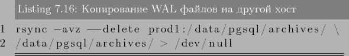
В конце, необходимо скопировать файлы в каталог pg_xlog на
сервере PostgreSQL (он должен быть в режиме восстановления). Для
этого создается в каталоге данных PostgreSQL создать файл
recovery.conf с заданной командой копирования файлов из архива в
нужную директорию:
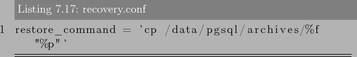
Документация PostgreSQL предлагает хорошее описание настройки непрерывного копирования, поэтому я не углублялся в детали (например, как перенести директорию СУБД с одного сервера на другой, какие могут быть проблемы). Более подробно вы можете почитать по этой ссылке http://www.postgresql.org/docs/9.0/static/continuous-archiving.html.